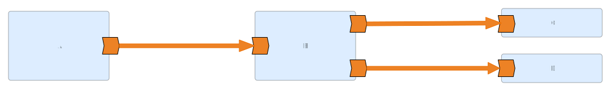
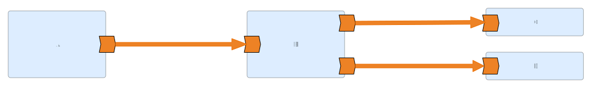

Complex software architectures are made of several components you have to interconnect, like a database, a user interface, an analysis tool,... The pieces of software that connects them are the middleware, the "glue", the orchestration between those components. These interactions between different unit operations are what make your usecase work.
Usually you design a flow that defines how each component interact with the rest. This flow can be linear or circular, split into several threads, have conditional steps,... and that's what you have to implement to make your software adapts to your usecase.
Integration Frameworks, can help us orchestrate and automate the interaction between different applications, APIs, third party services or any other software piece we may have to connect.
A proper integration tool should provide us with the following features: transformation, integration patterns and connectors to existing protocols and components.
NEXT
When we connect different components of an architecture, they rarely speak the same languages or, on this case, data formats. Some components will output an xml that has to be fed to the following component on a json form. Maybe we even need to add or remove some attributes on that json data. An integration framework allows us to define what is the mapping between the output of one component and the input of the following so we can forget about the explicit implementation. The less code we have to maintain, the better.
NEXT
Being able to transform data on each step is not enough if we can’t connect to (and from) the specific component we need. Our ideal integration framework should offer support for common protocols like ftp, http, jdbc,… Also it should offer support to connect to common components like a mail server, messaging services, atom,… We could claim even that no integration tool would be good if it doesn’t also support specific well known services like being able to send a message through a Telegram bot or store information on Elastic Search. Being able to seamlessly connect from one component to the next without having to worry about the specifics of their interfaces is what distinguishes an average integration tool from a good integration framework.
NEXT
And finally, not all flows will be lineal (->). Some of the steps will require broadcasting, some of them will require conditional flowing. Some will require waiting the output of different components to conflate the data. These action patterns are something that have been studied for a long time. And as with software development patterns, you can classify them and study them to create better integrations. You can find them as "Enterprise Integration Patterns".


 
